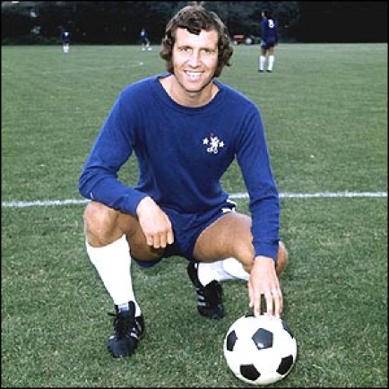
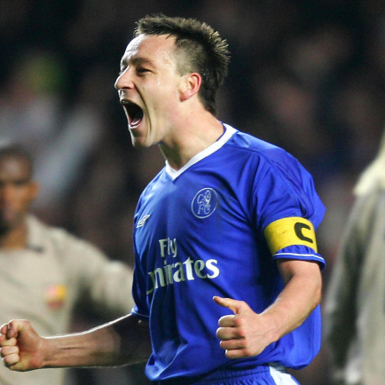
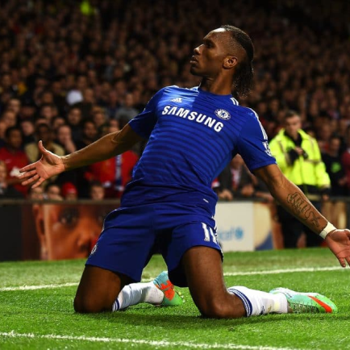
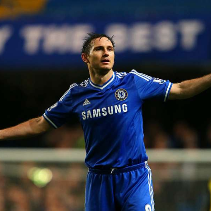

Chelsea
Internacionalmente, é um dos três clubes mais vitoriosos do futebol inglês, ao lado do Liverpool e Manchester United. Conquistou a Copa do Mundo de Clubes da FIFA em 2021, a Liga dos Campeões da UEFA em 2012 e 2021, a Liga Europa da UEFA em 2013 e 2019, a Recopa Europeia da UEFA em 1971 e 1998 e a Supercopa da UEFA em 1998 e 2021. No âmbito nacional, é um dos cinco clubes mais bem-sucedidos da Inglaterra, com seis títulos do Campeonato Inglês, oito títulos da Copa da Inglaterra, cinco títulos da Copa da Liga Inglesa, dois títulos da Copa de Membros Ingleses e quatro títulos da Supercopa da Inglaterra.
TÍtulos
Champions League: 2
Campeonato Inglês: 6
Supercopa da Inglaterra: 4
Mundial de Clubes: 1

Ídolos
- 
- 
- 
- 
Peter Osgood
O rei de Stamford Bridge. Se a descrição de Peter Osgood acabasse aqui, muita gente já entenderia o recado. Reinado é algo para poucos, estátua então… E quem consegue juntar as duas coisas? Só o “Mágico de Os”, com um “s” mesmo. Ah, o humor inglês.
John Terry
Odiado por seus adversários. Vitorioso. Amado pelo torcedor dos Blues. John Terry é sem dúvidas uma figura que desperta um mix de emoções em muita gente. Contudo, se tratando de uma lista de ídolos do Chelsea uma palavra o define bem: unânime.
Didier Drogba
A decisão em forma de atacante. O nome Didier Drogba amedronta zagueiros em seus sonhos até hoje. É imensurável o peso da contratação do marfinense por parte dos Blues. Você, torcedor, consegue imaginar o caminho que seria trilhado pelo Chelsea nos anos 2000 sem a presença de seu potente centroavante?
Frank Lampard
Quando pensamos no Chelsea, logo vem à cabeça o nome de Frank Lampard. É automático. Super Frank virou sinônimo dos Blues e não à toa. O atual técnico do clube londrino jamais poderia ficar fora de uma lista de ídolos do Chelsea
Stamford Bridge
Com capacidade para cerca de quarenta e três mil pessoas, foi inaugurado em 28 de abril de 1877. O estádio foi construido pelos proprietários do London Athetics Club, para competições de atletismo, e comprado pelos irmãos Gus e Joseph Mears em 1896, mas só tomando posse em 1904. A intenção dos irmãos Mears, era que o estádio recebesse partidas do mais alto nível do futebol. Após fracassos em trazer partidas da elite do futebol inglês, resolveram vender o estádio, mas por conselho de seu amigo Fred Parker, os irmãos Mears resolveram não vende-lo e, criar um clube para disputar partidas no estádio, surgindo assim, o Chelsea Football Club.